H-Bridge Perfboard Designs | DC | Stepper
This page presents images and videos about different motor drivers developed to control DC and Stepper motors.
Stepper Motors Drivers with H Bridges
L297 and H Bridge Circuits on Breadboard
The circuit uses an Arduino Uno and a L297 to create the control signals. It also uses two H Bridges with TIP142T transistors.
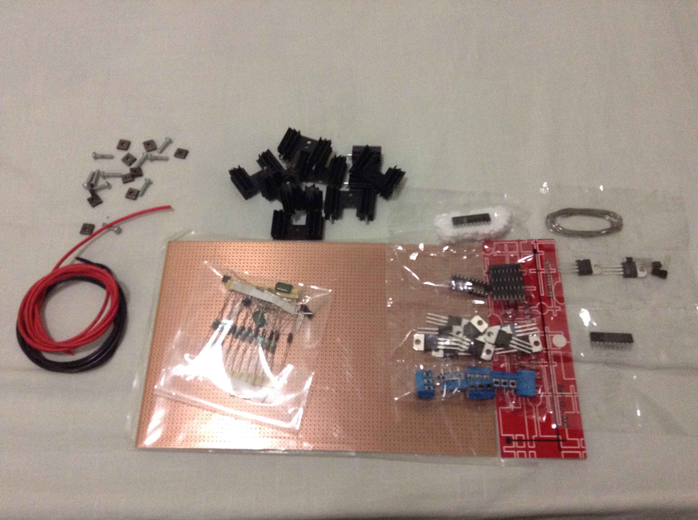
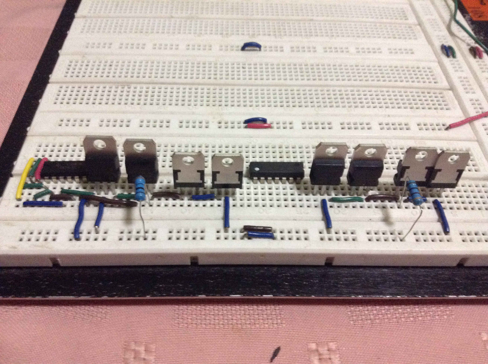
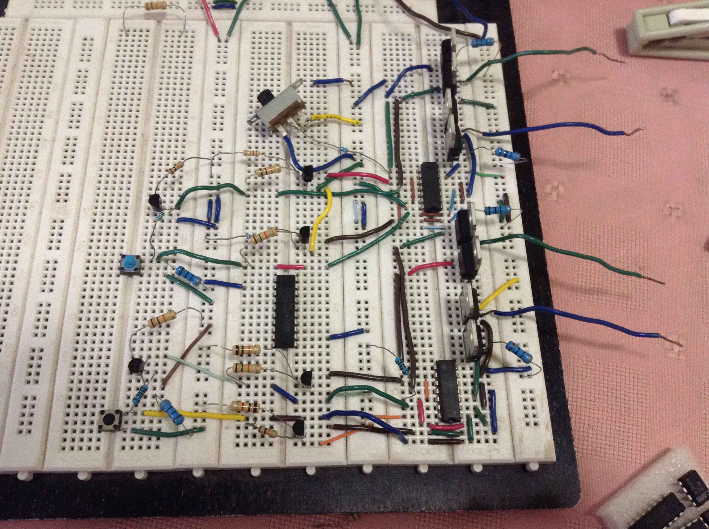
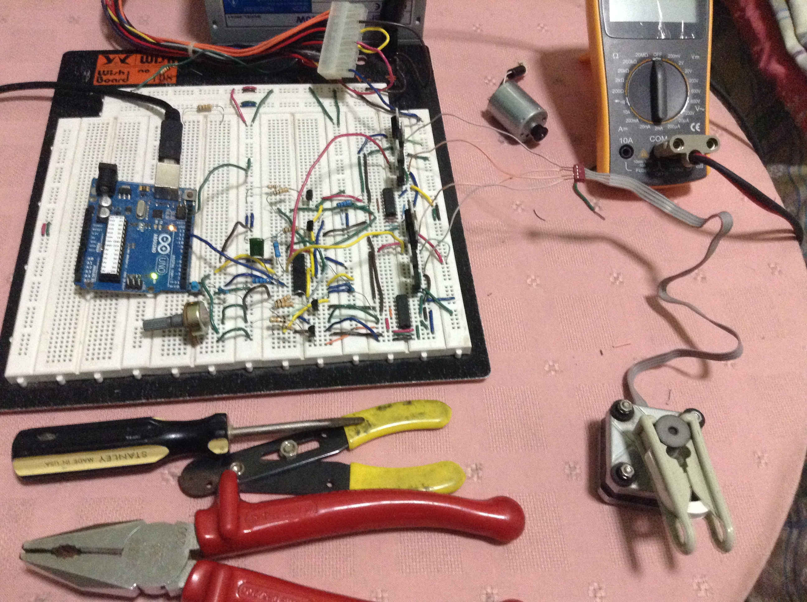
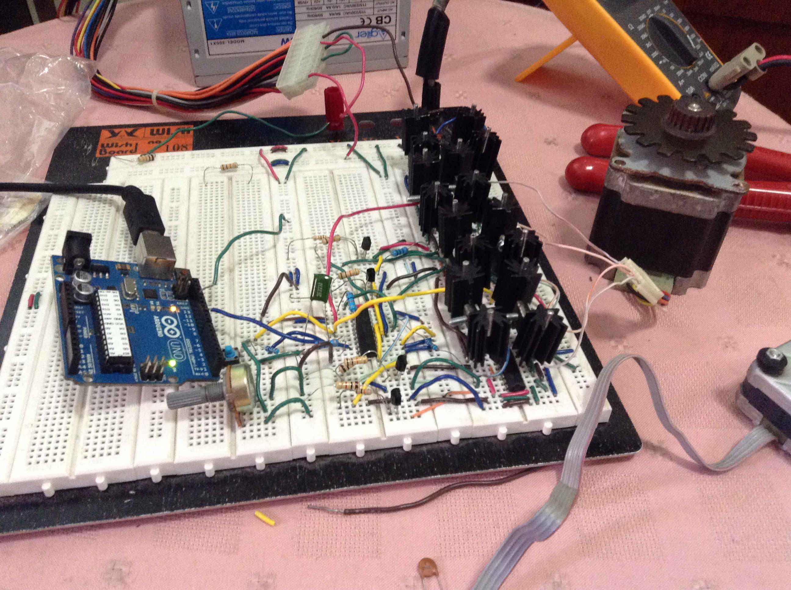

The following video presents the initial circuit tests on a Breadboard.
Perfboard Prototypes with L297 and H Bridge Circuits
The circuit previously tested on a breadboard was placed on a perfboard to create a prototype.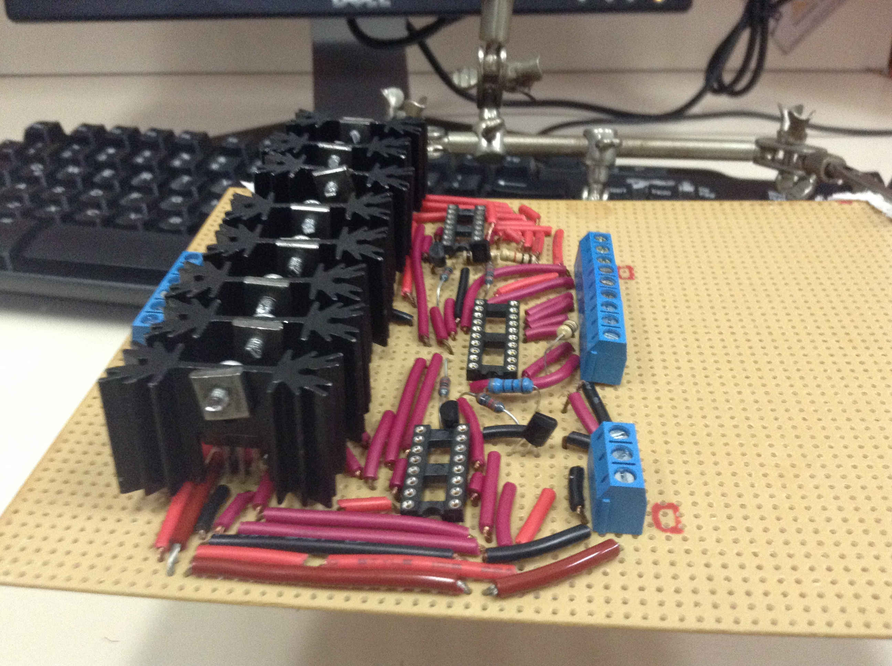
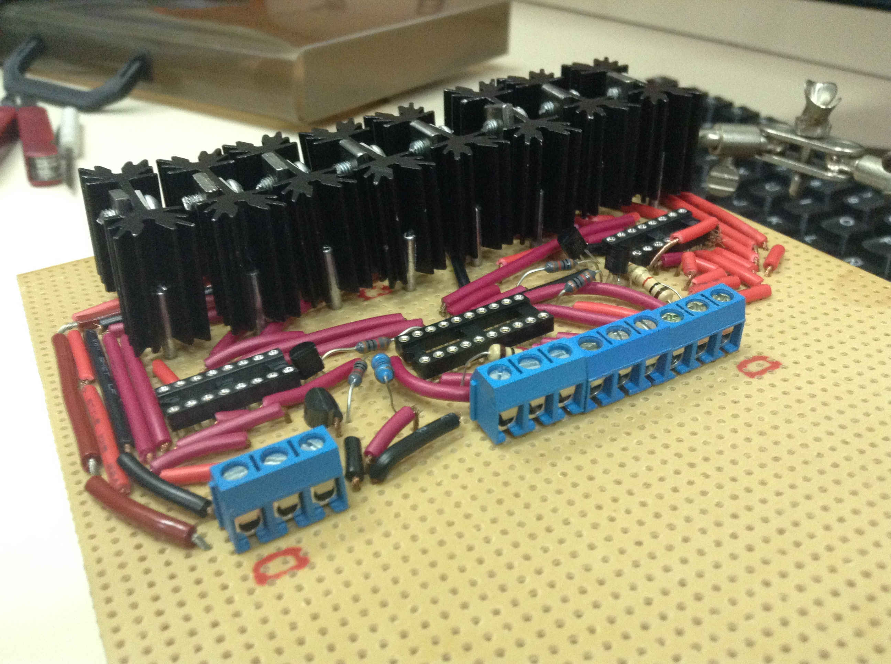
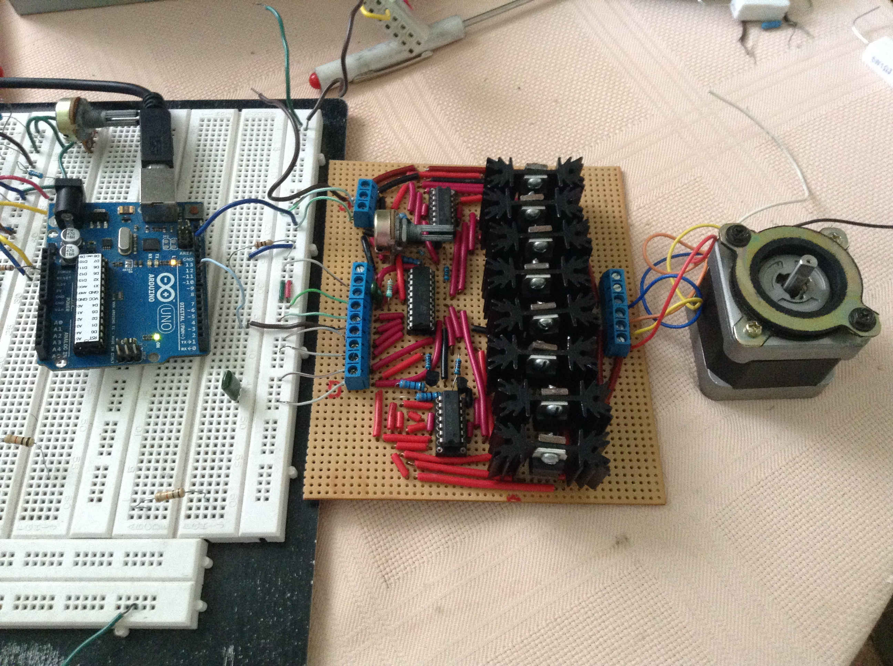
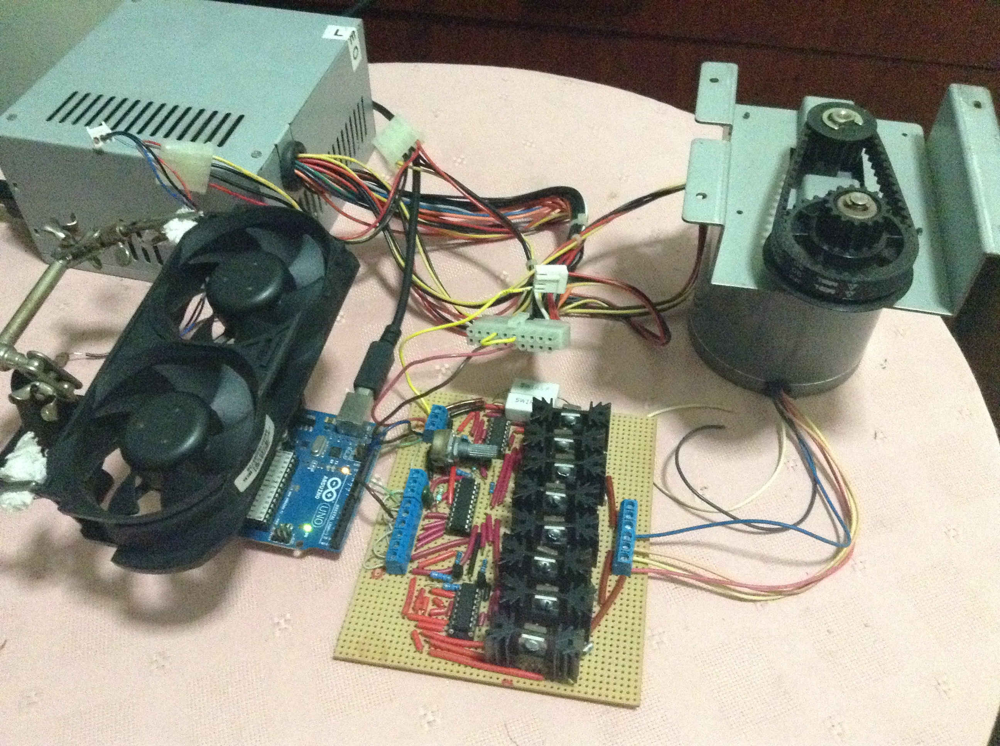
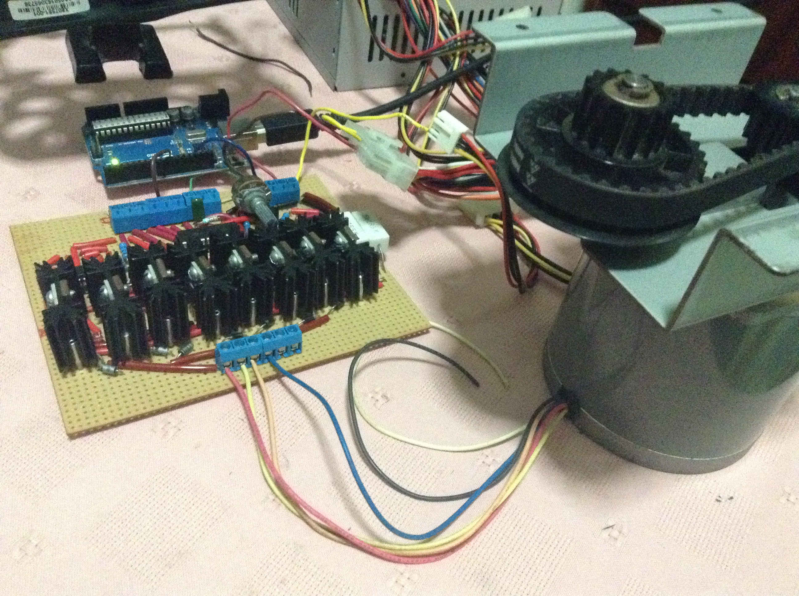
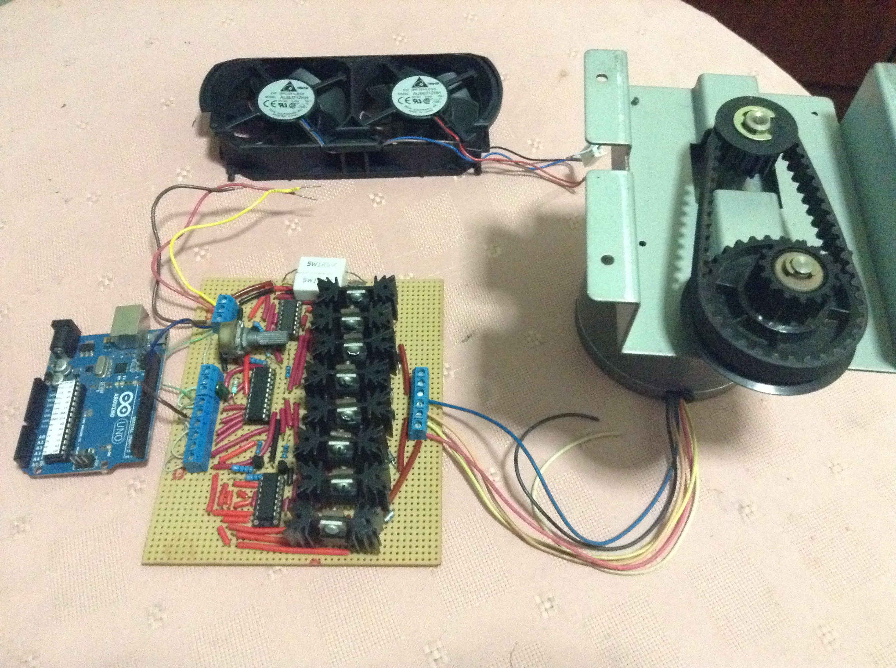
The Perfboard Prototype was tested with two motors.
The first motor had the following characteristics:
- TYPE 103H7123-0645
- Basic Step Angle: 1.8°
- Rated Voltage: 12V
- Rated Current [A/Phase]: 2.5 A
- Unipolar - 6 Wires
- Manufacturer: Sanyo Denki
The second motor had the following characteristics:
- TYPE 103-814-5242
- Basic Step Angle: 1.8°
- Rated Voltage: 2.5 V
- Rated Current [A/Phase]: 4.6 A
- Unipolar - 6 Wires
- Manufacturer: Sanyo Denki
DC Motor Drivers with H Bridges
The circuit uses an H Bridges implemented with TIP120 transistors and HD74LS08P AND Gates.
The motor used to test the circuit had the following characteristics:
- TYPE DSM-1240-2AU
- Rated Voltage: 19 V
- Rated speed: 2600 RPM
- Weight: 1 LB-8 OZ
- Manufacturer: TOSHIBA
The following video presents the initial tests of the perfboard prototype.
Posted In:
Robotics